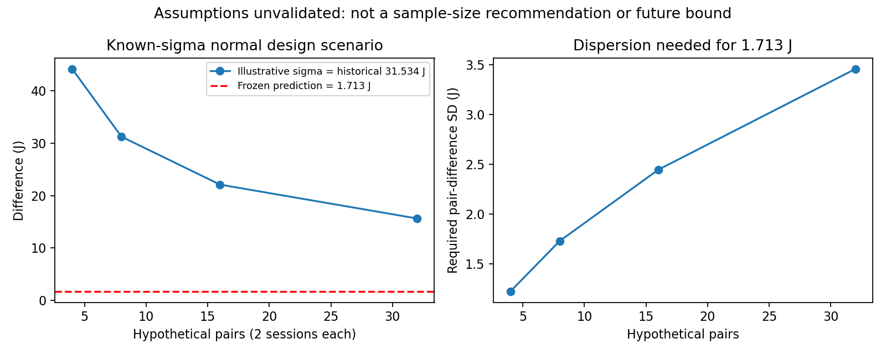

기존 차이 2개만으로 신뢰할 반복 수를 확정할 수 없습니다. 아래는 독립·정상성·알려진 분산을 가정한 양측 α=.05, 검정력 .8의 설계 민감도입니다. 실측 결과·정확도 PASS·실행 승인 아닙니다.
| 가정 쌍 | 세션 | 가정상 검출 차이 J | 1.713J에 필요한 SD J | 고정 관측만 분 |
|---|---|---|---|---|
| 4 | 8 | 44.173 | 1.223 | 28 |
| 8 | 16 | 31.235 | 1.729 | 56 |
| 16 | 32 | 22.086 | 2.445 | 112 |
| 32 | 64 | 15.617 | 3.458 | 224 |

2,661쌍은 관측 SD를 미래 모집단 값으로 가정한 계산일 뿐 실제 필요 횟수가 아닙니다. 준비·회수·cleanup은 시간표에 포함되지 않습니다. 미래 분산·AP 허용 증가·최소 실용 절감량은 미확정입니다.